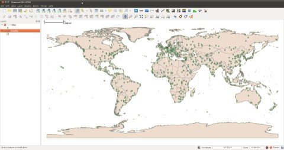
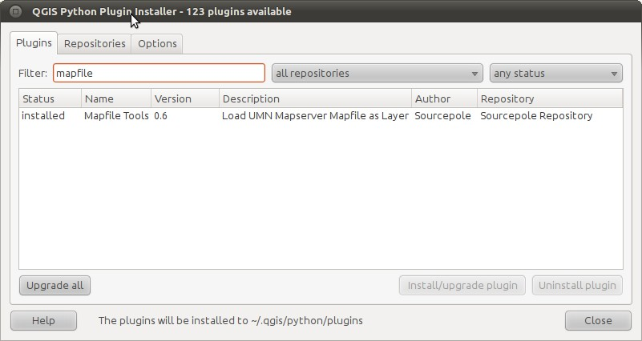
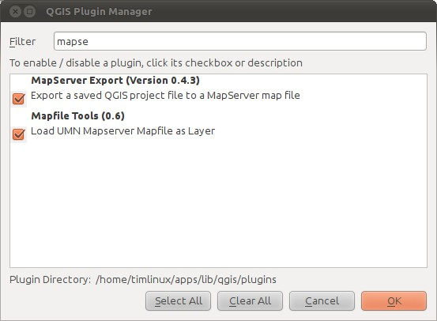
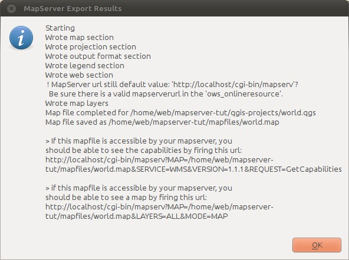
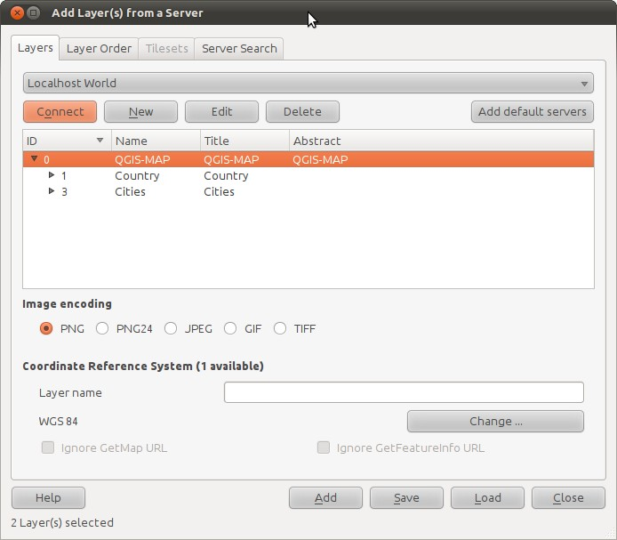
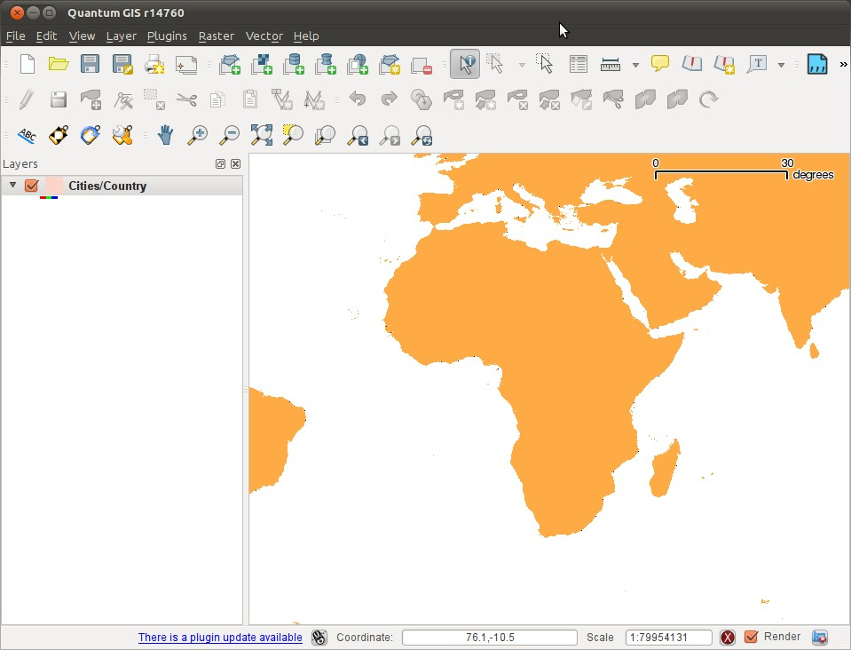
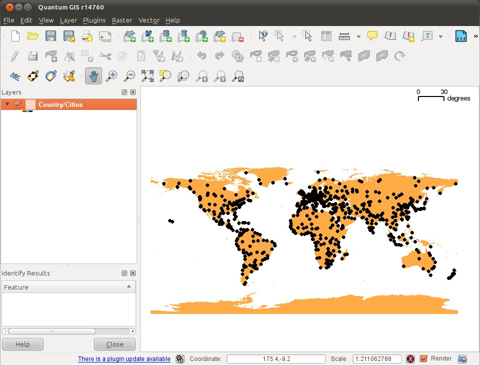
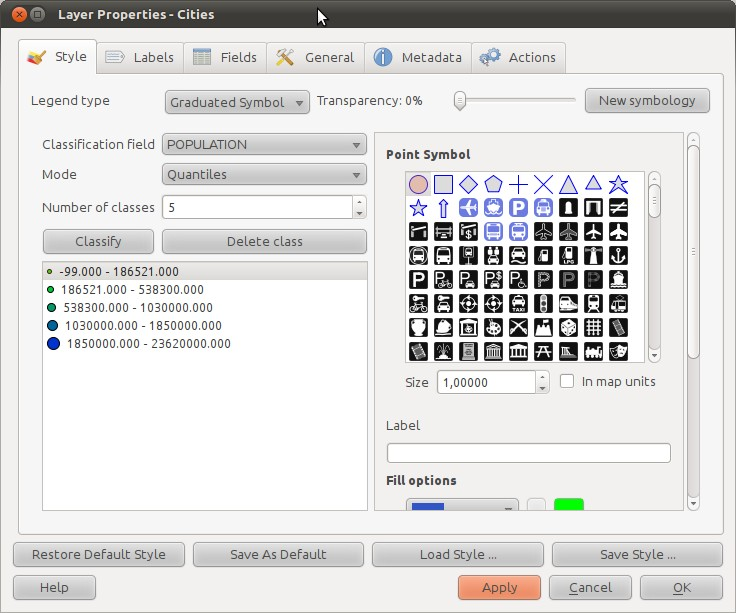
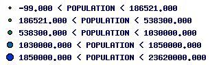

1. Introducing Mapserver with QGIS
1.1. What is it?
MapServer is an Open Source platform for publishing spatial data and interactive mapping applications to the web. Originally developed in the mid-1990s at the University of Minnesota, MapServer is released under an MIT-style license, and runs on all major platforms (Windows, Linux, Mac OS X). -- http://mapserver.org/
In this tutorial we will show you how to work with QGIS and mapserver to:
- generate mapfiles
- test mapfiles
- use mapserver as a portrayal service for maps and QGIS as a client (via wms)
1.2. Installation
We assume you have QGIS installed already. To install mapserver under ubuntu do:
sudo apt-get install apache2 cgi-mapserver python-mapscript
The python mapscript module above is not strictly needed - it will be used for testing our map files.
For the above mentioned testing, you should also install mapfile tools plugin using the QGIS python plugin manager (you need to enable 3rd party repositories first).
1.3. Installing some test data into PostGIS
We are going to create a database first. We assume here that you already have postgresql and a database user account.
At the bash prompt do:
createdb mapserver createlang plpgsql mapserver psql mapserver < /usr/share/postgresql/8.4/contrib/postgis-1.5/postgis.sql psql mapserver < /usr/share/postgresql/8.4/contrib/postgis-1.5/spatial_ref_sys.sql
Now load our sample datasets (also from bash):
pg_restore country.dmp | psql mapserver pg_restore cities.dmp | psql mapserver
(You may encounter an error message complaining about unknown roles, but you can safely disregard it.)
Now create a non-privileged user for use from mapserver (from the psql prompt):
create role ms_readonly with password 'ms_readonly' LOGIN;
Assign the new user read permissions to the tables we imported (again from the psql prompt):
grant select on cities to ms_readonly; grant select on country to ms_readonly; grant select on geometry_columns to ms_readonly;
1.4. Creating a connection to the database in QGIS
Open QGIS and create a new postgres connection to your mapserver database using your readonly account.
Layer -> Add PostGIS Layer -> New
And then configure it to look like this:

Now connect to your database. You may get an error like the one below, which you can safely ignore - it appears because we (purposely) gave the ms_readonly account limited permissions.

Once you have connected, open the countries and cities layers in QGIS:

Which should open with some random colours like this:

Note: To ensure that we can export all of this later, open the Properties dialog for each of these two layers and under the Style tab, change them to using the 'old symbology' implementation. Mapserver doesn't work with the new symbology yet, so for now we need to accommodate it in this way.
1.5. Making your first map file
What is a map file? A map file is a simple text file that defines the options that you want mapserver to use when rendering your maps. It specifies the extents of your project, Coordinate Reference Systems (CRS), which map layers to use and what symbology to use for them. In many respects, it is just like a QGIS project file, but for web mapping.
Let's dive right in! We are going to use two plugins to help us do our work. First install the Mapfile Tools plugin in QGIS (you must enabled 3rd party repositories first).

Next use the plugin manager to enable the mapserver export tool - which we will use to create your initial map file.

Save your qgis project - I called mine world.qgs and I placed it in a directory structure like this:
/home/web/mapserver-tut/
`-- qgis-projects
`-- world.qgs
Now run the mapserver export plugin:
Plugins -> Mapserver Export -> Mapserver Export
Accept the default options and save your map file. I have placed mine here:
mapserver-tut/
|-- mapfiles
| `-- world.map <-- new map file created
`-- qgis-projects
`-- world.qgs
Note: The directory where you place the map file and the map file itself must be accessible to the apache www-data user.

After the export, you will see a message with some tips like this:

Before it can be used, the map file as exported needs a few tweaks. Open it using your favourite editor, e.g. vim.
Now comment out the following lines by placing a hash before them:
# FONTSET './fonts/fonts.txt' # SYMBOLSET './symbols/symbols.txt'
And near the bottom comment out the line:
# SYMBOL "circle"
We will explain why we commented them out just now, but first let's test our new map service!
1.6. Understanding the mapfile structure
Until now we have just dived into capabilities documents and adding layers without really taking a look at the structure of the mapfile itself. I did this on purpose to let you first get a feel for what can be achieved with mapserver.
Let's look at the structure of the map file:
MAP
PROJECTION
OUTPUTFORMAT
LEGEND
WEB
METADATA
TEMPLATE
LAYER 1
LAYER 2
...
LAYER N
The mapfile is a structured document that is described very nicely in the http://mapserver.org/mapfile/index.html mapserver documentation. As such we won't try to repeat everything they describe there. Rather we will highlight a few important points to bear in mind and create a few examples to illustrate what you can do with mapserver and a nice map file.
The purpose of the map file is to describe all the elements of your web mapping service. With the map file you can create different kinds of services (simple mapserver cgi, WMS, WFS, WCS).
The first thing to understand about the map file is that it is made up of nested sections that start with a section name and end with the keyword 'END'. The outermost or toplevel section is always the 'MAP' section, so the most basic possible map file you could make would look like this:
MAP END
Within each section, more sections can exist. Each section can have various properties.
The MAP section describes general properties relating to the Coordinate Reference System, the image output format(s) supported, the image background colours etc.
The LEGEND section describes how a getLegendGraphic image should look if it is requested.
The WEB section provides some control for limiting zoom in an out activites, provides templating options and probably most importantly has a METADATA subsection which describes your web service using keywords.
The PROJECTION section is used to define the Coordinate Reference System for the service. As we will see below, mapserver supports on the fly projection too.
1.7. Testing
The first thing I usually do when I set up a new map service is to test it. In this section we show the different ways you can manually contruct a request to the server. Although you won't use these on a day to day basis, understanding them can be very useful for diagnostics. If the service does not return the expected results, you can issue these low level commands and look at the xml documents returned to try to identify any inconsistencies. Also mapserver will sometimes add comments for you to the document indicating where the service specification can be improved.
You will see later on in the trouble shooting section, that watching the apache logs to see which requests are being issued by your client (and if neccessary replaying those requests in your browser) can also help you to identify issues in your application architecture.
1.7.1. GetCapabilities
Your first port of call should be to issue a get capabilities request like this:
http://localhost/cgi-bin/mapserv?
map=/home/web/mapserver-tut/mapfiles/world.map&
request=getCapabilities&
service=wms&
version=1.1.0
Note: For formatting purposes I will be breaking up urls into multiple lines in this tutorial, but you should write them into your browser location bar as a single line.
<!-- end of DOCTYPE declaration -->
<WMT_MS_Capabilities version="1.1.0">
<!--
MapServer version 5.6.5 OUTPUT=GIF OUTPUT=PNG OUTPUT=JPEG OUTPUT=WBMP
OUTPUT=SWF OUTPUT=SVG SUPPORTS=PROJ SUPPORTS=AGG SUPPORTS=FREETYPE
SUPPORTS=ICONV SUPPORTS=FRIBIDI SUPPORTS=WMS_SERVER SUPPORTS=WMS_CLIENT
SUPPORTS=WFS_SERVER SUPPORTS=WFS_CLIENT SUPPORTS=WCS_SERVER
SUPPORTS=SOS_SERVER SUPPORTS=FASTCGI SUPPORTS=THREADS SUPPORTS=GEOS
SUPPORTS=RGBA_PNG INPUT=EPPL7 INPUT=POSTGIS INPUT=OGR INPUT=GDAL
INPUT=SHAPEFILE
-->
<Service>
<Name>OGC:WMS</Name>
<Title>QGIS-MAP</Title>
<OnlineResource xlink:href="http://localhost/cgi-bin/mapserv?
map=/home/web/mapserver-tut/mapfiles/world.map&"/>
<ContactInformation>
</ContactInformation>
</Service>
<Capability>
<Request>
<GetCapabilities>
<Format>application/vnd.ogc.wms_xml</Format>
<DCPType>
<HTTP>
<Get>
<OnlineResource xlink:href="http://localhost/cgi-bin/mapserv?
map=/home/web/mapserver-tut/mapfiles/world.map&"/>
</Get>
<Post>
<OnlineResource xlink:href="http://localhost/cgi-bin/
mapserv?map=/home/web/mapserver-tut/mapfiles/world.map&"/>
</Post>
</HTTP>
</DCPType>
</GetCapabilities>
<GetMap>
<Format>image/png; mode=24bit</Format>
<Format>image/gif</Format>
<Format>image/png</Format>
<Format>image/jpeg</Format>
<Format>image/vnd.wap.wbmp</Format>
<Format>image/tiff</Format>
<Format>image/svg+xml</Format>
<DCPType>
<HTTP>
<Get>
<OnlineResource xlink:href="http://localhost/cgi-bin/mapserv?
map=/home/web/mapserver-tut/mapfiles/world.map&"/>
</Get>
<Post>
<OnlineResource xlink:href="http://localhost/cgi-bin/mapserv?
map=/home/web/mapserver-tut/mapfiles/world.map&"/>
</Post>
</HTTP>
</DCPType>
</GetMap>
<GetFeatureInfo>
<Format>text/plain</Format>
<Format>application/vnd.ogc.gml</Format>
<DCPType>
<HTTP>
<Get>
<OnlineResource xlink:href="http://localhost/cgi-bin/mapserv?
map=/home/web/mapserver-tut/mapfiles/world.map&"/>
</Get>
<Post>
<OnlineResource xlink:href="http://localhost/cgi-bin/mapserv?
map=/home/web/mapserver-tut/mapfiles/world.map&"/>
</Post>
</HTTP>
</DCPType>
</GetFeatureInfo>
<DescribeLayer>
<Format>text/xml</Format>
<DCPType>
<HTTP>
<Get>
<OnlineResource xlink:href="http://localhost/cgi-bin/mapserv?
map=/home/web/mapserver-tut/mapfiles/world.map&"/>
</Get>
<Post>
<OnlineResource xlink:href="http://localhost/cgi-bin/mapserv?
map=/home/web/mapserver-tut/mapfiles/world.map&"/>
</Post>
</HTTP>
</DCPType>
</DescribeLayer>
</Request>
<Exception>
<Format>application/vnd.ogc.se_xml</Format>
<Format>application/vnd.ogc.se_inimage</Format>
<Format>application/vnd.ogc.se_blank</Format>
</Exception>
<VendorSpecificCapabilities/>
<UserDefinedSymbolization SupportSLD="1" UserLayer="0" UserStyle="1" RemoteWFS="0"/>
<Layer>
<Name>QGIS-MAP</Name>
<Title>QGIS-MAP</Title>
<Abstract>QGIS-MAP</Abstract>
<SRS>EPSG:4326</SRS>
<LatLonBoundingBox minx="-173.83" miny="-81.3583" maxx="185.69" maxy="106.408"/>
<Layer queryable="1" opaque="0" cascaded="0">
<Name>Country</Name>
<Title>Country</Title>
<LatLonBoundingBox minx="-173.83" miny="-81.3583" maxx="185.69" maxy="106.408"/>
</Layer>
<Layer queryable="1" opaque="0" cascaded="0">
<Name>Cities</Name>
<Title>Cities</Title>
<LatLonBoundingBox minx="-173.83" miny="-81.3583" maxx="185.69" maxy="106.408"/>
</Layer>
</Layer>
</Capability>
</WMT_MS_Capabilities>
The capabilities document is a machine and human readable declaration from your map service describing all the things it can do. In this case it can:
- Provide its name and title QGIS-MAP.
- Provide the contact details of the person responsible for the service if any.
- Describe its capabilities and by which protocols (HTTP) they are available in response to a GetCapabilities request (as listed above).
- Provide a map (in various image formats) in response to a GetMap request.
- Provide information about a given feature in response to a GetFeatureInfo request.
- Provide details about one or more layers in response to a DescribeLayer request.
- The document ends with a listing of all the layers available for the service.
1.7.2. DescribeLayer
The purpose of the describe layer request is to get a description for one or more layers offered by the map service:
http://localhost/cgi-bin/mapserv? map=/home/web/mapserver-tut/mapfiles/world.map& request=DescribeLayer& service=wms& version=1.3.0& layers=Country& sld_version=1.1.0
Which produces something like:
<?xml version='1.0' encoding="ISO-8859-1"?>
<DescribeLayerResponse xmlns="http://www.opengis.net/sld"
xmlns:ows="http://www.opengis.net/ows" xmlns:se="http://www.opengis.net/se"
xmlns:wfs="http://www.opengis.net/wfs"
xmlns:xsi="http://www.w3.org/2001/XMLSchema-instance"
xmlns:xlink="http://www.w3.org/1999/xlink"
xsi:schemaLocation="http://www.opengis.net/sld
http://schemas.opengis.net/sld/1.1.0/DescribeLayer.xsd">
<Version>1.1.0</Version>
<LayerDescription>
<owsType>wfs</owsType>
<se:OnlineResource xlink:type="simple"
xlink:href="http://localhost/cgi-bin/mapserv?
map=/home/web/mapserver-tut/mapfiles/world.map"/>
<TypeName>
<se:FeatureTypeName>Country</se:FeatureTypeName>
</TypeName>
</LayerDescription>
</DescribeLayerResponse>
It doesn't tell us too much because there are not many properties defined for the layer at this stage.
1.7.3. GetMap
No doubt you have been waiting for this part - the part where we actually make a map:
http://localhost/cgi-bin/mapserv? map=/home/web/mapserver-tut/mapfiles/world.map& SERVICE=WMS& VERSION=1.3.0& REQUEST=GetMap& BBOX=-86.962482,-182.818000,111.102000,194.678000& CRS=EPSG:4326& WIDTH=1561& HEIGHT=819& LAYERS=Country,Cities& STYLES=,& FORMAT=image/png& DPI=96& TRANSPARENT=true
It should return a pretty picture something like this:

1.8. Testing with QGIS
1.8.1. Create a new WMS Connection
You can use QGIS as a WMS client - it will display the rendered map just like any other layer.
Layer -> Add WMS Layer -> New
And then define your new WMS layer source as:
""Name:" Localhost World "Url:" ```http://localhost/cgi-bin/mapserv? map=/home/web/mapserver-tut/mapfiles/world.map```

1.8.2. Adding a layer
Now select 'Localhost World' from your connections list and click 'connect'.
Then select the top level item on the tree then click 'add':

You should see the same layer we saw previously in the web browser, but now rendered in QGIS. But now you can pan and zoom around in the layer!

1.9. Beautifying your map
The process we followed above is an easy way to get started, but it is just that: a starting point. From here on we will be manually editing the mapfile and creating symbol files etc.
You might have noticed that the cities layer doesn't really show up (in fact they are there but drawn as single pixels). This is because we have not yet made a proper symbol for them. In this step we will show you how to define a new symbol and assign it to the cities layer.
1.9.1. Creating a symbol definition
To start with we need to create a neat directory structure for our symbols, so we will add a new directory so our tree looks like this:
mapserver-tut/
|-- mapfiles
| |-- symbols
| | `-- symbols.txt
| `-- world.map
`-- qgis-projects
`-- world.qgs
So under the mapfiles directory, you need to create the symbols directory, and then create a text file called symbols.txt using your text editor. Now add the following to that file:
SYMBOLSET
SYMBOL
NAME 'circle'
TYPE ELLIPSE
FILLED TRUE
POINTS
1 1
END
END
END
We have created a simple symbolset and defined one symbol called 'circle' as an ellipse with radius and flattening equal (so it will make a perfect circle).
Now let's uncomment and tweak a few lines in our map file that I had you comment out before:
Uncomment your symbolset line near the top of the map file and make it look like this:
SYMBOLSET './symbols/symbols.txt'
Uncomment at around line 120:
SYMBOL "circle"
Now refresh your map view in QGIS and you should see something like this:

The symbolset file is used to define any symbols you want to use. The process of creating symbols is described in the http://mapserver.org/mapfile/symbol.html Mapserver Symbol and the [http://mapserver.org/mapfile/symbology/construction.html construction of cartographic symbols reference].
1.9.2. Creating multiple classes for a layer
Sometimes you want to do things like assign multiple symbols to a layer based on an attribute. For example, lets make our cities vary in size based on the population they host.
In QGIS I can load the cities layer and then create graduated symbology for it (make sure you are using the 'old' symbology) based on the population.

When you click OK, your map should now look like this:

Now save your project and run the mapserver export tool again, but this time tick the 'LAYER information only' box and set the map file name to a temporary file e.g. /tmp/test.map. Doing this will create a map file with only layer definitions in it, which we can then use to overwrite the existing cities layer definition in our map file:

Now use a text editor to cut the 'cities' layer definition from the /tmp/test.map file you made and overwrite the cities definition in the world.map file with it.
So this:
LAYER
NAME 'Cities'
TYPE POINT
DUMP true
TEMPLATE fooOnlyForWMSGetFeatureInfo
EXTENT -182.818000 -86.052507 194.678000 111.102207
CONNECTIONTYPE postgis
CONNECTION "dbname='mapserver' host=localhost port=5432 user='ms_readonly' password='ms_readonly' sslmode=disable"
DATA 'the_geom FROM "cities" USING UNIQUE gid USING srid=4326'
FILTER ( GeometryType("the_geom") IN ('POINT','MULTIPOINT') )
METADATA
'ows_title' 'Cities'
END
STATUS OFF
TRANSPARENCY 100
PROJECTION
'proj=longlat'
'ellps=WGS84'
'datum=WGS84'
'no_defs'
END
CLASS
NAME 'Cities'
STYLE
SYMBOL "circle"
SIZE 7.0
OUTLINECOLOR 0 0 0
COLOR 0 0 0
END
END
END
Gets replaced with this:
LAYER
NAME 'Cities'
TYPE POINT
DUMP true
TEMPLATE fooOnlyForWMSGetFeatureInfo
EXTENT -218.847506 -191.606995 236.654187 165.517114
CONNECTIONTYPE postgis
CONNECTION "dbname='mapserver' host=localhost port=5432 user='ms_readonly' password='ms_readonly' sslmode=disable"
DATA 'the_geom FROM "cities" USING UNIQUE gid USING srid=4326'
FILTER ( GeometryType("the_geom") IN ('POINT','MULTIPOINT') )
METADATA
'ows_title' 'Cities'
END
STATUS OFF
TRANSPARENCY 100
PROJECTION
'proj=longlat'
'ellps=WGS84'
'datum=WGS84'
'no_defs'
END
CLASSITEM 'POPULATION'
CLASS
NAME '-99.000 < POPULATION < 186521.000'
EXPRESSION ( ([POPULATION] >= -99.000) AND ([POPULATION] <= 186521.000) )
STYLE
SYMBOL "circle"
SIZE 3.5
OUTLINECOLOR 0 0 0
COLOR 0 255 0
END
END
CLASS
NAME '186521.000 < POPULATION < 538300.000'
EXPRESSION ( ([POPULATION] >= 186521.000) AND ([POPULATION] <= 538300.000) )
STYLE
SYMBOL "circle"
SIZE 5.25
OUTLINECOLOR 0 0 0
COLOR 0 203 52
END
END
CLASS
NAME '538300.000 < POPULATION < 1030000.000'
EXPRESSION ( ([POPULATION] >= 538300.000) AND ([POPULATION] <= 1030000.000) )
STYLE
SYMBOL "circle"
SIZE 7.0
OUTLINECOLOR 0 0 0
COLOR 0 152 103
END
END
CLASS
NAME '1030000.000 < POPULATION < 1850000.000'
EXPRESSION ( ([POPULATION] >= 1030000.000) AND ([POPULATION] <= 1850000.000) )
STYLE
SYMBOL "circle"
SIZE 8.75
OUTLINECOLOR 0 0 0
COLOR 0 101 154
END
END
CLASS
NAME '1850000.000 < POPULATION < 23620000.000'
EXPRESSION ( ([POPULATION] >= 1850000.000) AND ([POPULATION] <= 23620000.000) )
STYLE
SYMBOL "circle"
SIZE 10.5
OUTLINECOLOR 0 0 0
COLOR 0 50 205
END
END
END
There are two important changes here. Firstly the 'CLASSITEM' option was added that tells mapserver which field we are going to classify cities by. Secondly, each CLASS has an EXPRESSION defined which designates the upper and lower limits for that class.
Let's add our mapserver layer back into QGIS and test what the result looks like:

1.9.3. Now you try
Use the techniques we have learned above to create distinct classes on the country layer based on the population size in each country. We want to achieve something like this:

1.10. An exercise
Let's recap what we have learned so for by adding another layer to our project. This time we will add roads to our map so that we have some line features to work with.
- Use the supplied roads.dmp to load the roads layer into your database
- Set the permissions on the roads table so that the ms_readonly user has access to it
- Add the roads layer to your GIS project three times
- Give the first layer a scale visibility range of 0 to 500000
- Give the second layer a scale visibility range of 500000 to 5000000
- Give the third layer a scale visibility range of 5000000 to 50000000
- Save your project
- Export the roads layers to a temporary map file and merge them into the world.map file.
Solution:
You map file should now be looking something like this:
# Map file created from QGIS project file /home/web/mapserver-tut/qgis-projects/world.qgs
# Edit this file to customize for your map interface
# (Created with PyQgis MapServer Export plugin)
MAP
NAME "QGIS-MAP"
# Map image size
SIZE 100 100
UNITS meters
EXTENT -182.818000 -86.052507 194.678000 111.102207
#FONTSET './fonts/fonts.txt'
SYMBOLSET './symbols/symbols.sym'
PROJECTION
'proj=longlat'
'ellps=WGS84'
'datum=WGS84'
'no_defs'
END
# Background color for the map canvas -- change as desired
IMAGECOLOR 255 255 255
IMAGEQUALITY 95
IMAGETYPE agg
OUTPUTFORMAT
NAME agg
DRIVER AGG/PNG
IMAGEMODE RGB
END
# Legend
LEGEND
IMAGECOLOR 255 255 255
STATUS ON
KEYSIZE 18 12
LABEL
TYPE BITMAP
SIZE MEDIUM
COLOR 0 0 89
END
END
# Web interface definition. Only the template parameter
# is required to display a map. See MapServer documentation
WEB
# Set IMAGEPATH to the path where MapServer should
# write its output.
IMAGEPATH '/tmp/'
# Set IMAGEURL to the url that points to IMAGEPATH
# as defined in your web server configuration
IMAGEURL '/tmp/'
# WMS server settings
METADATA
'ows_title' 'QGIS-MAP'
'ows_onlineresource' 'http://localhost/cgi-bin/mapserv?map=/home/web/mapserver-tut/mapfiles/world.map'
'ows_srs' 'EPSG:4326'
END
#Scale range at which web interface will operate
# Template and header/footer settings
# Only the template parameter is required to display a map. See MapServer documentation
TEMPLATE 'fooOnlyForWMSGetFeatureInfo'
END
LAYER
NAME 'Cities'
TYPE POINT
DUMP true
TEMPLATE fooOnlyForWMSGetFeatureInfo
EXTENT -218.847506 -191.606995 236.654187 165.517114
CONNECTIONTYPE postgis
CONNECTION "dbname='mapserver' host=localhost port=5432 user='ms_readonly'
password='ms_readonly' sslmode=disable"
DATA 'the_geom FROM "cities" USING UNIQUE gid USING srid=4326'
FILTER ( GeometryType("the_geom") IN ('POINT','MULTIPOINT') )
METADATA
'ows_title' 'Cities'
END
STATUS OFF
TRANSPARENCY 100
PROJECTION
'proj=longlat'
'ellps=WGS84'
'datum=WGS84'
'no_defs'
END
CLASSITEM 'POPULATION'
CLASS
NAME '-99.000 < POPULATION < 186521.000'
EXPRESSION ( ([POPULATION] >= -99.000) AND ([POPULATION] <= 186521.000) )
STYLE
SYMBOL "circle"
SIZE 3.5
OUTLINECOLOR 0 0 0
COLOR 0 255 0
END
END
CLASS
NAME '186521.000 < POPULATION < 538300.000'
EXPRESSION ( ([POPULATION] >= 186521.000) AND ([POPULATION] <= 538300.000) )
STYLE
SYMBOL "circle"
SIZE 5.25
OUTLINECOLOR 0 0 0
COLOR 0 203 52
END
END
CLASS
NAME '538300.000 < POPULATION < 1030000.000'
EXPRESSION ( ([POPULATION] >= 538300.000) AND ([POPULATION] <= 1030000.000) )
STYLE
SYMBOL "circle"
SIZE 7.0
OUTLINECOLOR 0 0 0
COLOR 0 152 103
END
END
CLASS
NAME '1030000.000 < POPULATION < 1850000.000'
EXPRESSION ( ([POPULATION] >= 1030000.000) AND ([POPULATION] <= 1850000.000) )
STYLE
SYMBOL "circle"
SIZE 8.75
OUTLINECOLOR 0 0 0
COLOR 0 101 154
END
END
CLASS
NAME '1850000.000 < POPULATION < 23620000.000'
EXPRESSION ( ([POPULATION] >= 1850000.000) AND ([POPULATION] <= 23620000.000) )
STYLE
SYMBOL "circle"
SIZE 10.5
OUTLINECOLOR 0 0 0
COLOR 0 50 205
END
END
END
LAYER
NAME 'Africa_roads'
TYPE LINE
DUMP true
TEMPLATE fooOnlyForWMSGetFeatureInfo
EXTENT 19.840697 -33.528569 30.975147 -22.423970
CONNECTIONTYPE postgis
CONNECTION "dbname='mapserver' host=localhost port=5432 user='ms_readonly'
password='ms_readonly' sslmode=disable"
DATA 'the_geom FROM "africa_roads" USING UNIQUE gid USING srid=4326'
METADATA
'ows_title' 'Africa_roads'
END
STATUS OFF
TRANSPARENCY 100
PROJECTION
'proj=longlat'
'ellps=WGS84'
'datum=WGS84'
'no_defs'
END
MINSCALE 1
MAXSCALE 500000
CLASS
NAME 'Africa_roads'
STYLE
WIDTH 1.61
COLOR 189 0 189
END
END
END
LAYER
NAME 'Africa_roads2'
TYPE LINE
DUMP true
TEMPLATE fooOnlyForWMSGetFeatureInfo
EXTENT 19.840697 -33.528569 30.975147 -22.423970
CONNECTIONTYPE postgis
CONNECTION "dbname='mapserver' host=localhost port=5432 user='ms_readonly'
password='ms_readonly' sslmode=disable"
DATA 'the_geom FROM "africa_roads" USING UNIQUE gid USING srid=4326'
METADATA
'ows_title' 'Africa_roads2'
END
STATUS OFF
TRANSPARENCY 100
PROJECTION
'proj=longlat'
'ellps=WGS84'
'datum=WGS84'
'no_defs'
END
MINSCALE 500000
MAXSCALE 5000000
CLASS
NAME 'Africa_roads2'
STYLE
WIDTH 1.61
COLOR 0 0 189
END
END
END
LAYER
NAME 'Africa_roads3'
TYPE LINE
DUMP true
TEMPLATE fooOnlyForWMSGetFeatureInfo
EXTENT 19.840697 -33.528569 30.975147 -22.423970
CONNECTIONTYPE postgis
CONNECTION "dbname='mapserver' host=localhost port=5432 user='ms_readonly'
password='ms_readonly' sslmode=disable"
DATA 'the_geom FROM "africa_roads" USING UNIQUE gid USING srid=4326'
METADATA
'ows_title' 'Africa_roads3'
END
STATUS OFF
TRANSPARENCY 100
PROJECTION
'proj=longlat'
'ellps=WGS84'
'datum=WGS84'
'no_defs'
END
MINSCALE 5000000
MAXSCALE 50000000
CLASS
NAME 'Africa_roads3'
STYLE
WIDTH 3.61
COLOR 0 189 0
END
END
END
LAYER
NAME 'Country'
TYPE POLYGON
DUMP true
TEMPLATE fooOnlyForWMSGetFeatureInfo
EXTENT -189.000000 -101.897171 189.000000 95.520767
CONNECTIONTYPE postgis
CONNECTION "dbname='mapserver' host=localhost port=5432
user='ms_readonly' password='ms_readonly' sslmode=disable"
DATA 'the_geom FROM "country" USING UNIQUE gid USING srid=4326'
FILTER ( GeometryType("the_geom") IN ('POLYGON','MULTIPOLYGON') )
METADATA
'ows_title' 'Country'
END
STATUS OFF
TRANSPARENCY 100
PROJECTION
'proj=longlat'
'ellps=WGS84'
'datum=WGS84'
'no_defs'
END
CLASSITEM 'pop_cntry'
CLASS
NAME '-99999.000 < pop_cntry < 62920.000'
EXPRESSION ( ([pop_cntry] >= -99999.000) AND ([pop_cntry] <= 62920.000) )
STYLE
WIDTH 0.91
COLOR 155 255 155
END
END
CLASS
NAME '62920.000 < pop_cntry < 1085777.000'
EXPRESSION ( ([pop_cntry] >= 62920.000) AND ([pop_cntry] <= 1085777.000) )
STYLE
WIDTH 0.91
COLOR 123 203 143
END
END
CLASS
NAME '1085777.000 < pop_cntry < 5245515.000'
EXPRESSION ( ([pop_cntry] >= 1085777.000) AND ([pop_cntry] <= 5245515.000) )
STYLE
WIDTH 0.91
COLOR 92 152 132
END
END
CLASS
NAME '5245515.000 < pop_cntry < 17827520.000'
EXPRESSION ( ([pop_cntry] >= 5245515.000) AND ([pop_cntry] <= 17827520.000) )
STYLE
WIDTH 0.91
COLOR 93 134 154
END
END
CLASS
NAME '17827520.000 < pop_cntry < 1281008318.000'
EXPRESSION ( ([pop_cntry] >= 17827520.000) AND ([pop_cntry] <= 1281008318.000) )
STYLE
WIDTH 0.91
COLOR 125 145 205
END
END
END
END
1.11. Symbol Overlays
You can overlay one or more symbols in a class:
STYLE
SYMBOL "circle"
SIZE 10.25
OUTLINECOLOR 0 0 0
COLOR 0 203 52
END
STYLE
SYMBOL "circle"
SIZE 5.25
OUTLINECOLOR 0 0 0
COLOR 0 0 0
END
Note that the render order is top down.
1.12. Image Symbols
You can create image symbols too by putting the image into symbols directory and symbol definition in your symbols/symbols.txt file:
SYMBOL NAME "blob" TYPE PIXMAP IMAGE "blob.png" TRANSPARENT 8 END
Save the image as symbols/blob.png. Now in your map file define the style
STYLE
SYMBOL "blob"
SIZE 5.25
END
1.13. Adding Rasters
The procedure for adding rasters is much the same. The easiest is to simply add them to a blank QGIS project and them export the mapserver layer definitions, then graft them into your map file. I am going to create a raster subfolder under my mapserver tutorial directory and place a NASA global mosaic image into it:
mapserver-tut/
|-- mapfiles
| |-- symbols
| `-- world.map
`-- raster
|-- BlueMarbleWorldJan2004.jgw
`-- BlueMarbleWorldJan2004.jpg
The Raster folder contains two files - the Blue Marble mosaic for January 2004 and its world file.
Lets add this raster to QGIS then export its layer definitions as we have done before with vector data:

It should have produced something that looks like this:
LAYER
NAME 'BlueMarbleWorldJan2004'
TYPE RASTER
DUMP true
TEMPLATE fooOnlyForWMSGetFeatureInfo
EXTENT -190.799649 -94.528565 190.854979 94.509235
DATA '/home/web/mapserver-tut/raster/BlueMarbleWorldJan2004.jpg'
METADATA
'ows_title' 'BlueMarbleWorldJan2004'
END
STATUS OFF
TRANSPARENCY 100
PROJECTION
'proj=longlat'
'ellps=WGS84'
'datum=WGS84'
'no_defs'
END
END
If you prefer (and I do), you can substitute the absolute file path for a relative path, thus:
DATA '../raster/BlueMarbleWorldJan2004.jpg'
Test again in the usual way - by adding a wms layer to QGIS and including all layers from the service:

1.14. Transparency
As you can see from the previous screenshot, having a raster background is not much use if you can't actually see it because all your polygons are opaque. You can make any layer semi-transparent in mapserver by assiging it a value of <100. Let's make all our countries have a semi-transparent fill:
LAYER
NAME 'Country'
TYPE POLYGON
DUMP true
TEMPLATE fooOnlyForWMSGetFeatureInfo
EXTENT -189.000000 -101.897171 189.000000 95.520767
CONNECTIONTYPE postgis
CONNECTION "dbname='mapserver' host=localhost port=5432
user='ms_readonly' password='ms_readonly' sslmode=disable"
DATA 'the_geom FROM "country" USING UNIQUE gid USING srid=4326'
FILTER ( GeometryType("the_geom") IN ('POLYGON','MULTIPOLYGON') )
METADATA
'ows_title' 'Country'
END
STATUS OFF
TRANSPARENCY 50 # <-- make the layer semi-transparent
When specifying colours, you can also use
-1 -1 -1
to indicate transparency. For example we can make the map background transparent by changing this:
# Background color for the map canvas -- change as desired
IMAGECOLOR 255 255 255
to this:
# Background color for the map canvas -- change as desired
IMAGECOLOR -1 -1 -1
To test it you will need to add just the non-raster layers to QGIS and then put something (like our raster) as a separate backdrop.
1.15. Creating a legend
The legend clause allows your service to support getLegendGraphic requests.
For example you can make a request like this (spread over many lines to ease digestion):
http://localhost/cgi-bin/mapserv?
map=/home/web/mapserver-tut/mapfiles/world.map&
request=getLegendGraphic&
layer=Cities&version=1.3.0&
format=image/png&
sld_version=1.1.0
and it will produce a graphic like this:

1.16. On the Fly Projection (OTFP)
Mapserver supports on the fly projection - including for rasters! This is very handy since it means you can specify an arbitrary list of CRS's and have your map delivered in any one of them.
Enabling OTFP is simply a matter of declaring additional CRSes in the WEB metadata section:
METADATA
'wms_title' 'Mapserver Tut'
'wms_onlineresource' 'http://localhost/cgi-bin/mapserv?map=/home/web/mapserver-tut/mapfiles/world.map'
'wms_srs' 'EPSG:4326 EPSG:900913'
END
Note: There are three places where CRS's are defined in the mapfile:
- The map section: This is the CRS that is used by default and all other layers are converted to in the absence of any CRS being defined.
- Layer sections: Each layer can define its own CRS which specifies what specific CRS the layer is in.
- The web->metadata section: This is a list of allowed CRS's that the WMS client can request. Mapserver will reproject all data to that CRS on the fly as needed.
1.17. Get feature info
In order to support 'getFeatureInfo' requests
1.18. Troubleshooting and debugging
Trouble shooting mapserver is an ordered activity:
Q: Is the client using a valid URL for the map service?
A: Copy the url used into your browser and try to open it - does it give a 404 or similar error?
Q: Is your client making valid WMS requests?
A: If the URL is valid, the request parameters may not be. Once again, find out what the actual request URLS that are being generated look like and test one manually in your browser. There are a few ways to check what URLS are being used, but the simplest is to watch your apache logs as you make a request e.g.:
sudo tail -f /var/log/apache2/access.log
Q: Is the map file configuration correct?
A: It could be that the url being used is correct, but the actual map file is broken. For example you may have the incorrect database password for your connection parameters, or you may have a syntax error in the map file. Mapserver by default will try to print the error information into the image it renders back for you. Better (and more secure) is to log any errors to a mapserver log file by adding a few lines like this to your map file:
DEBUG 5 #debugging level between 1 and 5, 5 is the most detailed CONFIG "MS_ERRORFILE" "/tmp/ms.log"
Now watch that log file using tail and watch for any errors while making a fresh request:
tail -f /tmp/ms.log
If you do notice an error in the log file, it will typically tell you the line number for the error and some (hopefully) diagnostic information.
Note: Be careful of the INCLUDE directive as it will throw your line numbers off.
1.19. Where to next?
Once you have your mapserver web service successfully set up, you can use it to serve up maps via the OGC WMS, WFS and WCS services. You can also use it as the backend for a tilecache if you are concerned about maximising performance. In the final section of this tutorial we will briefly describe how to set up and test such a tiled map service.
1.19.1. Setting up tilecache
Tile cache works by making successive WMS getMap requests to your service, at a range of scales and storing the results as images on the server file system. When the client requests a map scene, TileCache looks to see if it has been pre-rendered. If it has it delivers it directly to the client from the cache. If it has not been cached yet, it requests the image from the upstream WMS server, caches for future use and delivers it to the client.
To install TileCache, simply do:
sudo apt-get install tilecache
Next you need to configure tilecache's configuration file with the details of your service. Under Ubuntu this configuration file is stored as /etc/tilecache.cfg. For our world.map file we can add the following entry (you must do it as sudo user):
sudo vim /etc/tilecache.cfg
Now add an entry like this:
[mapserver-tut] type=WMS layers=Country,Cities,BlueMarbleWorldJan2004 url=http://localhost/cgi-bin/mapserv?map=/home/web/mapserver-tut/mapfiles/world.map extension=jpg bbox=-180,-90,180,90 metatile=yes levels=16 srs=EPSG:4326 extent_type=loose
Note that it simply references the existing mapserver service we have set up and passes it a list of layers that should be rendered.
Also noteworthy is that since this is a cache we are building, it is not suitable to use for often changing layers, since the maps are pre-rendered and you will need to regenerate all the maps each time a layer changes.
We can test our tilecache services by creating a new QGIS WMS connection that points to it:

Note that the connection now points to:
http://localhost/cgi-bin/tilecache.cgi
Rather than directly to our mapserver instance. Now go ahead and connect to the service

You will notice that the tilesets tab is activated (there must be no layers selected on the layers tab).
Click on the Tilesets tab and you will then be able to select your mapserver-tut tileset. Click add and it should appear in the map canvas. If you zoom in and out you should see the individual tiles being rendered - they are being taken from the cache if present or rendered and cached if not.